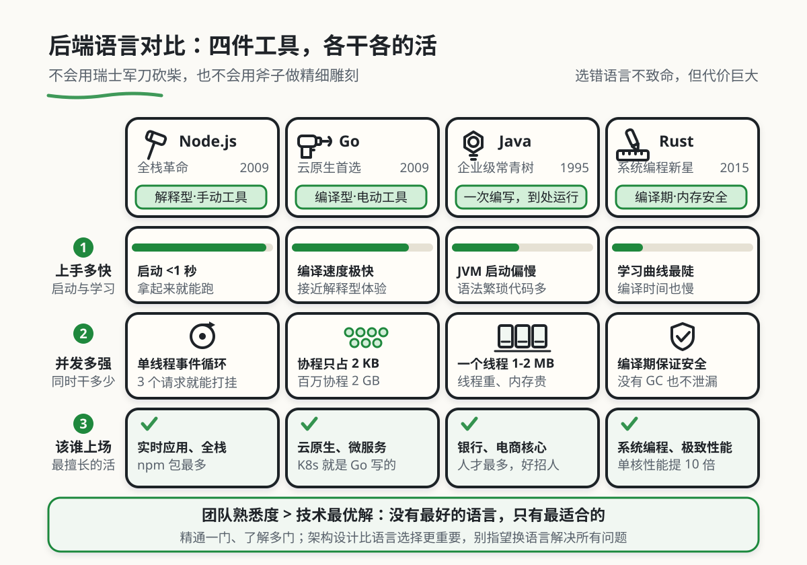

后端语言对比（Node.js / Go / Java / Rust）
本章目录 · 1 节
后端语言导论
核心问题 "我们后端该用什么语言？" 这就像问："我应该买什么工具？" 答案永远不是"最好的"，而是"最适合你的"。本章将带你全面了解主流后端编程语言的特点、应用场景和选择策略，帮你选对语言。
1. 了解后端语言的动机
1.1 从单一到多元：后端语言的演变
在互联网早期，后端开发的选择非常有限。那时候大多用 Perl 或 CGI 脚本，一个网站的后端代码可能就几百行，部署方式简单直接——把文件上传到服务器的 CGI-BIN 目录就行。那是一个"一招鲜吃遍天"的时代， Perl、PHP、Java 几乎垄断了整个市场。
但现代后端开发完全变了样。我们现在面临的选择有 Java、Go、Node.js、Rust、C#、Kotlin、Scala、Swift、Ruby、WebAssembly 等，每种语言都有其特定的适用场景和优势。云计算、微服务、AI/ML 等新技术的出现，让后端开发的边界不断扩展，语言选择也变得越来越多元化。
这种多元化是技术进步的必然结果。 不同的场景有不同的需求，就像不同的工作需要不同的工具。你不会用瑞士军刀砍柴，也不会用斧子做精细雕刻。同样，后端语言的选择也必须基于具体场景。

👴 二十年前
- Perl/CGI 或 PHP 统治世界
- 一个文件包含所有逻辑
- 部署方式简单粗暴
- 语言选择几乎不是问题
现代开发
- Java、Go、Node.js、Rust、C#、Kotlin、Scala、Swift、Ruby、WebAssembly 等多语言并存
- 微服务架构，不同服务可用不同语言
- 云原生部署，容器化成为标准
- 语言选型直接影响开发效率和系统性能
1.2 案例：选对语言这么重要
你可能会说："用 Python 什么都能写，为什么还要纠结？" 让我讲一个真实的故事，你就会明白为什么语言选型如此重要。
老王的语言选型踩坑记
老王创业做了一个在线视频处理平台，后端用 Python Django 搭建。初期发展很快，用户量不多，系统运行良好。
但随着用户量增长，问题出现了：视频转码是 CPU 密集型任务，Python 的 GIL（全局解释器锁）导致多线程性能很差，一次只能转一个视频，用户排队等待时间越来越长。
老王试图用多进程解决，但每个进程占用内存几百 MB，服务器成本暴涨。最后他不得不痛下决心，用 Go 重写了整个转码服务。
结果呢？同样的服务器，Go 版本的并发处理能力是 Python 的 10 倍，用户等待时间从 30 分钟降到 3 分钟。但重写花了 3 个月时间，错过了业务黄金期。
老王从此明白了一个道理：选错语言不致命，但会付出巨大代价。
核心启示 没有最好的语言，只有最适合的语言。 Python 擅长快速开发和 AI/ML，但不是高性能计算的最优解；Go 性能强大且开发效率高，但 AI/ML 生态不如 Python。了解每种语言的优劣势，选型时才知道该选哪个。
关键不是学习所有语言，而是理解它们的设计哲学和适用场景，在需要时能快速选择合适的工具。
2. 核心概念：理解后端语言的基本特征
🤔 这些概念和语言有什么关系？
就像买车时要看马力、油耗、载重量一样，选择后端语言时也要理解几个核心维度：
- 编译/解释：影响启动速度和运行性能
- 类型系统：影响开发效率和代码可靠性
- 并发模型：影响系统能同时处理多少请求
- 内存管理：影响性能和开发体验
理解这些概念，你就能看穿语言表象，抓住本质差异。
在深入对比各种语言之前，我们需要先建立一些基础概念。这些概念就像语言的"DNA"，决定了它们的特点和适用场景。
2.1 用工具比喻理解语言特征
想象你在装修房子，不同的装修工具就像不同的后端语言：
| 概念 | 🔧 工具比喻 | 实际作用 | 具体例子 |
|---|---|---|---|
| 编译型语言 | 电动工具，插电即用，力量大但准备时间长 | 代码先编译成机器码再运行，启动慢但性能高 | Go、Rust、C++ |
| 解释型语言 | 手动工具，拿起来就能用，但效率相对低 | 代码边解释边运行，开发快但性能相对低 | Python、PHP、Ruby |
| 静态类型 | 严格按图纸施工，不容易出错但灵活性差 | 变量类型在编译时确定，错误提前发现 | Java、Go、Rust |
| 动态类型 | 自由发挥，灵活但容易出错 | 变量类型在运行时确定，开发快但风险高 | Python、JavaScript、PHP |
| 并发模型 | 同时干多少活的能力 | 决定了系统能同时处理多少请求 | 见下方详细解释 |
2.2 编译 vs 解释：启动速度与运行性能的权衡
编译型语言（如 Go、Rust、C++）在运行前需要先编译成机器码，这个过程就像准备电动工具——插电、检查、调试，需要时间。但一旦准备好，使用时效率极高。
解释型语言（如 Python、PHP）不需要编译，直接运行。这就像手动工具，拿起来就能用，开发效率高。但运行时需要逐行解释，性能相对较低。
🔍 看看编译过程做了什么
Go 代码（编译型）：
// 源代码 main.go
package main
import "fmt"
func main() {
fmt.Println("Hello")
}
编译过程：
go build main.go
↓
[编译器检查语法、类型检查、优化代码]
↓
生成可执行文件 main（机器码）
↓
./main ← 直接运行，速度极快
Python 代码（解释型）：
# 源代码 main.py
print("Hello")
运行过程：
python main.py
↓
[解释器逐行读取、解析、执行]
↓
每运行一次都要重新解析
实际影响是什么？
编译型语言：启动慢（需要先编译），但运行快。
- 适合：长期运行的服务（API 服务器、微服务）
- 不适合：频繁重启的场景（如 Serverless 函数）
解释型语言：启动快（直接运行），但运行相对慢。
- 适合：快速开发、脚本、数据分析
- 不适合：高性能计算、大规模并发服务
现代技术的发展让这个界限变得模糊：Java 既是编译型（编译成字节码），又是解释型（JVM 执行）；JIT（即时编译）技术让 JavaScript 在浏览器中也能达到接近编译型语言的性能；Python 可以通过 C 扩展获得高性能。
2.3 并发模型：同时处理多少请求
并发是后端开发中最关键的概念之一，它决定了系统同时能处理多少请求。不同语言的并发模型差异巨大，这往往是选型的决定性因素。
🤔 什么是并发？
先区分两个容易混淆的概念：
- 并发（Concurrency）：同时处理多个任务的能力（看似同时）
- 并行（Parallelism）：同时执行多个任务（真正同时）
打个比方：
- 并发：一个人同时应付三个客户的咨询（快速切换注意力）
- 并行：三个人分别应付三个客户（真的同时进行）
在单核 CPU 上，只能做到并发；在多核 CPU 上，才能做到并行。
主流语言的并发模型对比：
| 语言 | 并发模型 | 机制说明 | 资源消耗 | 适用场景 |
|---|---|---|---|---|
| Java | 操作系统线程 | 每个请求一个线程 | 1-2 MB/线程 | 传统企业应用 |
| Go | Goroutine 协程 | 用户态轻量级线程 | ~2 KB/协程 | 高并发、云原生 |
| Node.js | 事件循环 | 单线程 + 异步 I/O | 单线程 | I/O 密集型应用 |
| Python | 多进程 | 绕过 GIL 限制 | 进程级隔离 | 数据处理、脚本 |
从表格中你能看到什么？
Java 的多线程：每个线程占用 1-2 MB 内存，启动 1 万个线程就需要 10-20 GB 内存，成本很高。但 Java 的线程模型成熟稳定，适合传统企业应用。
Go 的 Goroutine：协程只占用 2 KB 内存，启动 100 万个协程只需要 2 GB 内存，成本极低。这就是为什么 Go 在云原生和微服务领域如此受欢迎。
Node.js 的事件循环：单线程模型意味着在处理大量并发 I/O 请求时效率很高（如实时聊天），但 CPU 密集型任务会阻塞整个事件循环，导致性能崩溃。
Python 的多进程：由于 GIL（全局解释器锁）的存在，Python 的多线程无法真正并行，只能用多进程。每个进程独立运行，内存隔离，但进程间通信开销大。
2.4 内存管理：谁来负责回收垃圾
内存管理是影响性能和开发体验的关键因素。不同语言采用了不同的策略，各有优劣。
| 语言 | 内存管理方式 | 实现机制 | 性能影响 | 开发体验 |
|---|---|---|---|---|
| Java | GC（垃圾回收） | 分代收集、并发标记 | 中等（有 STW 停顿） | 自动，无需关心 |
| Python | GC + 引用计数 | 自动回收 + 循环检测 | 较差（GIL 影响） | 自动，偶有泄漏 |
| Go | GC | 低延迟并发回收 | 良好 | 自动，性能优秀 |
| Node.js | GC（V8） | 分代回收 | 良好 | 自动，优化好 |
| Rust | 所有权系统 | 编译时检查，无 GC | 极佳 | 手动，学习陡峭 |
| C++ | 手动管理 | new/delete 或智能指针 | 极佳（但风险高） | 完全手动，易出错 |
什么是 GC（垃圾回收）？
GC = Garbage Collection，自动内存管理
想象你在打扫房间：
- 手动管理（C++）：自己记住哪里有垃圾，什么时候扔。效率高，但容易忘，导致内存泄漏。
- 自动回收（Java、Python、Go）：有个保洁阿姨自动帮你清理，你只管用。省心，但阿姨工作时你可能需要等待（STW 停顿）。
- 所有权系统（Rust）：用完立刻自动清理，不需要保洁阿姨。编译器保证不会出错，但学习成本高。
什么是 STW（Stop-The-World）？
GC 在回收垃圾时，需要暂停应用线程，这个暂停就叫 STW。对于大多数应用，几十毫秒的停顿无感知；但对于高频交易系统，1 毫秒的停顿都可能造成损失。
3. 主流后端语言详解
现在我们已经掌握了基础概念，接下来逐一了解每种主流后端语言的特点、优势和典型应用场景。
3.1 Java：企业级应用的常青树
🤔 什么是"企业级应用"？
企业级应用指大型、复杂、对可靠性要求极高的系统，如：
- 银行核心系统（转账、记账）
- 电商平台（订单、库存、支付）
- ERP/CRM 系统（企业管理、客户关系）
这类系统的特点：业务逻辑复杂、数据一致性要求高、不能挂、需要长期维护。
Java 在这个领域占据统治地位，就像瑞士军刀一样可靠。
历史与定位
Java 诞生于 1995 年，由 Sun 公司（后被 Oracle 收购）推出。它的设计哲学是"Write Once, Run Anywhere"（一次编写，到处运行），通过 JVM（Java 虚拟机）实现了跨平台能力。
核心特点
| 特性 | 说明 | 为什么重要 |
|---|---|---|
| 强类型静态语言 | 编译时就能发现类型错误 | 减少运行时 bug，代码更健壮 |
| 丰富的生态 | Spring、Spring Boot 等框架成熟 | 不需要重复造轮子，开发效率高 |
| 强大的工具链 | IntelliJ IDEA、Maven、Gradle | 开发体验好，团队协作顺畅 |
| 多线程支持 | 内置并发库，成熟稳定 | 适合处理复杂并发场景 |
代码示例
查看一个真实的 API 例子
// Java Spring Boot：用户注册 API
@RestController
@RequestMapping("/api/users")
public class UserController {
@Autowired
private UserService userService;
// 注册接口：POST /api/users/register
@PostMapping("/register")
public ResponseEntity<User> register(@RequestBody RegisterRequest request) {
// 1. 参数校验（编译时就能发现类型错误）
if (request.getUsername() == null || request.getUsername().length() < 3) {
return ResponseEntity.badRequest().build();
}
// 2. 调用业务逻辑
User user = userService.register(request);
// 3. 返回结果
return ResponseEntity.ok(user);
}
}
这段代码展示了 Java 的特点：
@RestController等注解让代码结构清晰- 强类型系统让参数校验在编译时就进行
- Spring 框架处理了大部分底层细节
适用场景
- 大型企业级应用（银行、保险、电信）
- 电商平台后端（淘宝、京东的核心系统）
- 大数据处理（Hadoop、Spark 生态）
- Android 开发（虽然 Google 推崇 Kotlin，但 Java 仍占很大比例）
优缺点分析
| 优点 | 缺点 |
|---|---|
| 生态成熟，第三方库丰富 | 语法相对繁琐，代码量大 |
| 性能优秀，JIT 编译优化好 | JVM 启动较慢，内存占用较高 |
| 人才储备充足，招聘容易 | 学习曲线较陡峭 |
| 工具链完善，开发体验好 | 版本更新快，需要持续学习 |
真实案例：阿里巴巴为什么选择 Java？
阿里巴巴的双11秒杀系统，峰值 QPS（每秒请求数）高达几十万，为什么用 Java 而不是性能更强的 Go？
- 团队背景：阿里工程师大多熟悉 Java
- 生态成熟：中间件（Dubbo、RocketMQ）都是 Java 生态
- 可靠性：Java 的类型系统和异常处理机制让大规模系统更稳定
- 性能足够：经过 JVM 优化，Java 性能已经足够，不是瓶颈
关键启示：性能不是唯一标准，团队熟悉度和生态成熟度往往更重要。
3.2 Node.js：JavaScript 的全栈革命
🤔 什么是"全栈"？
全栈 = 前端 + 后端都会
传统开发：
- 前端：JavaScript（浏览器）
- 后端：Java/Python/Go（服务器）
- 需要学两种语言
Node.js 全栈：
- 前端：JavaScript
- 后端：JavaScript（Node.js）
- 只需要学一种语言
这就是 Node.js 的最大价值：语言统一。
历史与定位
Node.js 由 Ryan Dahl 于 2009 年创建，它让 JavaScript 这门原本只能在浏览器中运行的语言，可以在服务器端运行。Node.js 基于 Chrome 的 V8 引擎，采用事件驱动、非阻塞 I/O 模型。
核心特点
| 特性 | 说明 | 为什么重要 |
|---|---|---|
| 单线程事件循环 | 通过异步 I/O 处理大量并发 | I/O 密集型应用性能极强 |
| JavaScript 全栈 | 前后端使用同一种语言 | 减少语言切换，开发效率高 |
| npm 生态 | 世界上最大的开源库生态系统 | 几乎任何功能都能找到现成的包 |
| 快速启动 | 轻量级，启动时间<1 秒 | 适合微服务和 Serverless |
代码示例
查看一个真实的 API 例子
// Node.js Express：用户注册 API
const express = require('express');
const app = express();
app.use(express.json()); // 自动解析 JSON
app.post('/api/users/register', async (req, res) => {
try {
// 1. 参数校验
const { username, password } = req.body;
if (!username || username.length < 3) {
return res.status(400).json({ error: '用户名太短' });
}
// 2. 调用业务逻辑（异步）
const user = await userService.register({ username, password });
// 3. 返回结果
res.json(user);
} catch (err) {
res.status(500).json({ error: err.message });
}
});
app.listen(3000);
这段代码展示了 Node.js 的特点：
async/await异步语法简洁- 回调错误处理（try/catch）
- 与前端 JavaScript 代码风格一致
适用场景
- 实时应用：聊天室、在线游戏、协作工具（WebSocket 支持）
- API 服务：RESTful API、GraphQL 服务
- 全栈 Web 应用：Next.js、Nuxt.js 等框架
- 微服务架构：轻量级服务，快速启动
- Serverless 函数：AWS Lambda、Vercel Functions
优缺点分析
| 优点 | 缺点 |
|---|---|
| 前后端语言统一，全栈开发效率高 | 单线程，CPU 密集型任务表现差 |
| npm 生态丰富，包管理方便 | 回调地狱（已被 async/await 缓解） |
| 高并发 I/O 性能优秀 | 类型系统较弱（可用 TypeScript 缓解） |
| 启动速度快，适合微服务 | 生态质量参差不齐，依赖管理混乱 |
真实踩坑案例：CPU 密集型任务的陷阱
某团队用 Node.js 做图片处理服务，用户上传图片后需要压缩、加水印、生成缩略图。
问题：这些操作都是 CPU 密集型，Node.js 的单线程模型导致处理一张图片时，整个事件循环被阻塞，其他请求全部等待。
结果：并发性能极差，3 个请求就能把服务打挂。
解决方案：
- 用 Go 重写图片处理服务（终极方案）
- 用子进程处理 CPU 密集型任务（临时方案）
- 使用 sharp 库（底层用 C++ 实现）代替纯 JavaScript 库
关键启示：Node.js 擅长 I/O（读写数据库、调用 API），不擅长 CPU 计算（图像处理、加密解密）。选型时必须理解这个根本差异。
3.3 Go：云原生时代的性能之选
🤔 什么是"云原生"?
云原生 = 为云环境设计的应用
特点：
- 容器化：Docker 打包，到处运行
- 微服务：小而独立的服务
- 动态编排：Kubernetes 自动调度
Go 是云原生的首选语言，因为：
- 编译成单一二进制文件，部署极简
- 启动快，适合容器环境
- 并发性能强，适合微服务
Docker 和 Kubernetes 都是用 Go 写的。
历史与定位
Go（又称 Golang）由 Google 的 Robert Griesemer、Rob Pike 和 Ken Thompson 于 2007 年开始设计，2009 年正式开源。Go 的设计目标是结合静态类型语言的安全性和动态类型语言的开发效率，特别适合构建大规模分布式系统。
核心特点
| 特性 | 说明 | 为什么重要 |
|---|---|---|
| Goroutine 协程 | 轻量级线程，百万级并发轻松实现 | 高并发场景性价比最高 |
| Channel 通道 | 基于 CSP 模型的通信机制 | 避免共享内存，代码更安全 |
| 快速编译 | 编译速度极快，接近解释型语言体验 | 开发效率高，反馈循环快 |
| 静态链接 | 编译生成单二进制文件，部署简单 | 一个文件搞定，无需依赖 |
代码示例
查看一个真实的 API 例子
// Go Gin：用户注册 API
package main
import (
"github.com/gin-gonic/gin"
"net/http"
)
type RegisterRequest struct {
Username string `json:"username" binding:"required,min=3"`
Password string `json:"password" binding:"required"`
}
func register(c *gin.Context) {
// 1. 参数绑定和校验（自动进行）
var req RegisterRequest
if err := c.ShouldBindJSON(&req); err != nil {
c.JSON(http.StatusBadRequest, gin.H{"error": err.Error()})
return
}
// 2. 调用业务逻辑
user, err := userService.Register(req)
if err != nil {
c.JSON(http.StatusInternalServerError, gin.H{"error": err.Error()})
return
}
// 3. 返回结果
c.JSON(http.StatusOK, user)
}
func main() {
r := gin.Default()
r.POST("/api/users/register", register)
r.Run(":3000")
}
这段代码展示了 Go 的特点：
- 结构体标签自动校验参数
- 错误处理显式且清晰
- 编译成单一可执行文件
适用场景
- 云原生基础设施：Docker、Kubernetes、Prometheus
- 微服务架构：高性能、低延迟的分布式服务
- 网络编程：高并发服务器、代理、网关
- 命令行工具：Docker、kubectl、Terraform
- 区块链开发：以太坊、Hyperledger Fabric
优缺点分析
| 优点 | 缺点 |
|---|---|
| 并发性能极强，Goroutine 轻量高效 | 泛型支持较晚（Go 1.18 才引入） |
| 编译速度快，开发效率高 | 错误处理繁琐（if err != nil 到处都是） |
| 部署简单，单二进制文件 | 缺少成熟的 GUI 框架 |
| 垃圾回收性能优秀 | 生态相对年轻，某些领域库不够丰富 |
真实案例：Uber 为什么从 Node.js 迁移到 Go？
Uber 早期大量使用 Node.js，但随着业务增长，遇到了严重的性能问题：在高并发场景下，Node.js 的单线程模型无法充分利用多核 CPU，导致延迟波动大。
Uber 选择 Go 重写了部分核心服务（如定价、 ETA 计算），结果：
- 延迟降低了 10 倍
- 硬件成本降低了 50%
- 系统稳定性大幅提升
为什么 Go 比 Node.js 快这么多？
- 真正的并行：Go 可以利用多核 CPU，Node.js 是单线程
- 编译优化：Go 是编译型语言，性能接近 C++
- GC 优化：Go 的垃圾回收器延迟极低（<1ms）
3.4 Rust：系统编程的新星
🤔 什么是"系统编程"?
系统编程 = 编写操作系统、数据库、浏览器底层
特点：
- 对性能要求极高（毫秒级甚至微秒级）
- 对内存控制要求严格（不能泄漏）
- 对安全性要求极高（不能崩溃）
这类程序通常用 C/C++ 编写，但 Rust 正在改变这个局面。
历史与定位
Rust 由 Mozilla 研究院的 Graydon Hoare 于 2006 年开始设计，2010 年首次公开，2015 年发布 1.0 稳定版。Rust 的设计目标是提供与 C/C++ 相当的性能，同时保证内存安全和线程安全，且不需要垃圾回收器。
核心特点
| 特性 | 说明 | 为什么重要 |
|---|---|---|
| 所有权系统 | 编译时检查内存安全，无需 GC | 保证无内存泄漏，性能极佳 |
| 零成本抽象 | 高级特性不带来运行时开销 | 既有安全性，又不牺牲性能 |
| 模式匹配 | 强大的 match 表达式 | 强制处理所有情况，减少 bug |
| Fearless Concurrency | 编译器保证线程安全 | 多线程编程不再害怕数据竞争 |
代码示例
查看一个真实的 API 例子
// Rust Actix-web：用户注册 API
use actix_web::{web, App, HttpResponse, HttpServer};
use serde::{Deserialize, Serialize};
#[derive(Deserialize, Serialize)]
struct RegisterRequest {
username: String,
password: String,
}
async fn register(req: web::Json<RegisterRequest>) -> HttpResponse {
// 1. 参数校验
if req.username.len() < 3 {
return HttpResponse::BadRequest().json(json!({"error": "用户名太短"}));
}
// 2. 调用业务逻辑
match user_service::register(&req).await {
Ok(user) => HttpResponse::Ok().json(user),
Err(err) => HttpResponse::InternalServerError().json(json!({"error": err.to_string()})),
}
}
#[actix_web::main]
async fn main() -> std::io::Result<()> {
HttpServer::new(|| {
App::new()
.route("/api/users/register", web::post().to(register))
})
.bind("127.0.0.1:3000")?
.run()
.await
}
这段代码展示了 Rust 的特点：
Result<T, E>类型强制错误处理match表达式覆盖所有情况- 编译时保证线程安全和内存安全
适用场景
- 系统编程：操作系统、文件系统、嵌入式开发
- 高性能服务：需要极致性能的网络服务
- WebAssembly：浏览器端高性能计算
- 区块链：加密货币、智能合约平台
- 游戏引擎：高性能游戏开发
优缺点分析
| 优点 | 缺点 |
|---|---|
| 极致性能，媲美 C/C++ | 学习曲线极其陡峭（最难学的语言之一） |
| 内存安全，编译时保证无泄漏 | 编译时间较慢 |
| 线程安全，编译时保证无数据竞争 | 生态相对年轻，某些领域库不够 |
| 优秀的错误处理机制 | 开发效率相对较低 |
| 零成本抽象 | 招聘难度大，人才稀缺 |
真实案例：Dropbox 为什么用 Rust 重写核心存储引擎？
Dropbox 的文件存储系统原来用 Python 编写，但随着用户量增长到 5 亿，遇到了严重的性能瓶颈：每个文件请求的 CPU 开销太大，服务器成本极高。
他们用 Rust 重写了存储引擎的核心部分（Block Server），结果：
- 单核性能提升了 10 倍
- 内存占用降低了 50%
- 硬件成本节省了数百万美元
为什么选择 Rust 而不是 C++？
- 内存安全：Rust 编译器保证无内存泄漏，C++ 需要手动管理
- 并发安全：Rust 编译时检查数据竞争，C++ 需要运行时调试
- 现代化工具链：Cargo 包管理器、文档系统、测试框架都很完善
代价：开发周期变长了，因为 Rust 学习曲线陡峭，团队需要时间适应。
4. 语言选型：决策框架
4.1 四步决策法
明确你的场景类型
| 场景类型 | 特征 | 推荐语言 | 不推荐 |
|---|---|---|---|
| 企业级核心业务 | 高可用、强事务、长生命周期 | Java、C# | Go（生态不够成熟） |
| 快速原型/MVP | 快速验证、快速迭代 | Python、Ruby | Java（太慢） |
| 云原生基础设施 | 高并发、低延迟、微服务 | Go、Rust | Python（性能不够） |
| 全栈 Web 应用 | 前后端统一、实时交互 | Node.js、Go | Java（太重） |
| AI/ML 项目 | 模型训练、数据处理 | Python | 其他所有 |
| 系统编程 | 极致性能、内存控制 | Rust、C++ | 其他所有 |
从表格中你能看到什么？
企业级应用选 Java：因为 Java 的类型系统、异常处理、事务支持让大规模系统更稳定。Spring 生态成熟，几乎不需要自己造轮子。
快速开发选 Python：代码量只有 Java 的 1/3，开发速度极快。适合 MVP 验证，但如果性能不够，后期可以用 Go 重写核心模块。
云原生选 Go：部署简单（单二进制文件）、启动快、并发强。Docker、Kubernetes 都是 Go 写的，生态成熟。
全栈选 Node.js：前后端都用 JavaScript，减少语言切换成本。适合小团队快速开发。
AI/ML 必须选 Python：整个 AI/ML 生态都是 Python。
评估团队背景
决策优先级：团队熟悉度 > 技术最优解
| 团队背景 | 推荐路线 | 理由 |
|---|---|---|
| Java 背景 | 继续 Java / 引入 Go | 生态迁移成本低，Go 可作为性能补充 |
| 前端背景 | Node.js → TypeScript → Go | 利用 JS 经验，逐步引入类型安全和后端语言 |
| Python 背景 | Python + Go 混合 | Python 负责业务逻辑，Go 负责性能敏感模块 |
| C/C++ 背景 | Rust / Go | Rust 替换 C++，Go 快速开发业务 |
| 全新人团队 | Go / Python | Go 培养工程思维，Python 快速产出 |
权衡性能与开发效率
决策矩阵：
| 性能要求 | 开发周期 | 推荐语言 | 架构建议 |
|---|---|---|---|
| 极高（高频交易） | 长 | C++ / Rust | 专用硬件，定制化优化 |
| 高（高并发 API） | 中 | Go / Java | 微服务，水平扩展 |
| 中等（普通 Web） | 短 | Node.js / Python | 单体应用，快速迭代 |
| 低（内部工具） | 极短 | Python / Ruby | 脚本化，自动化优先 |
考虑长期维护成本
维护成本的隐藏项：
| 因素 | 影响 | 语言差异 |
|---|---|---|
| 人才招聘 | 影响团队扩张 | Java 人才最多，Rust 最难招 |
| 监控运维 | 影响故障排查 | Java 工具链最全，Go 轻量简单 |
| 版本升级 | 影响技术债务 | Python 2→3 痛苦，Go 向后兼容 |
| 安全更新 | 影响合规 | 主流语言都有安全团队支持 |
5. 真实案例：技术栈演进路径
了解了理论后，我们通过真实案例，看看技术栈是如何在实际项目中演进的。
5.1 GitHub：从 Ruby 到多语言共存
2008 年：GitHub 上线，全部用 Ruby on Rails 开发。
为什么选择 Rails？
- 创始人是 Ruby 社区活跃成员
- 快速开发，适合初创公司
- "约定优于配置"减少决策疲劳
2010 年代初期：问题来了
- 用户量爆炸式增长，Rails 成为性能瓶颈
- Ruby 的 GIL（全局解释器锁）限制多线程性能
- 每次部署需要重启整个应用，停机时间长
解决方案：渐进式重构
GitHub 采用绞杀者模式 (Strangler Fig Pattern)：
- 识别瓶颈：找出最慢的功能模块（如代码搜索、通知系统）
- 逐步替换：用 Go 重写高性能服务
- API 网关：前端先调用新服务，失败时回退到旧服务
- 监控验证：确保新服务稳定后再完全下线旧代码
2015 年：GitHub 使用 Go 重写了代码搜索功能，查询速度提升 10 倍。
2018 年：通知系统从 Rails 迁移到 Go，延迟从 2 秒降到 100 毫秒。
今天的 GitHub 技术栈：
- 主站：仍然 Rails，但核心功能已拆分为微服务
- 高性能服务：Go（搜索、通知、Git 操作）
- 前端：React + TypeScript
- 基础设施：Kubernetes + MySQL + Redis
关键启示：
技术栈演进是渐进式改良。选错语言不致命，但拒绝改进会致命。
5.2 Twitter：从 Ruby 到 Java
2006 年：Twitter 上线，用 Ruby on Rails 开发。
问题出现：
- 用户快速增长，频繁宕机（著名的"Fail Whale"时代）
- Rails 无法处理高并发，每次推文都要查询数据库
- 响应时间从 200ms 涨到 5 秒
演进过程：
- 2008 年：引入 Scala（JVM 语言）处理消息队列
- 2010 年：核心搜索功能迁移到 Java（Lucene）
- 2011 年：整个推文流处理迁移到 Java
- 2017 年：完全迁移到微服务架构，多语言共存
今天的 Twitter 技术栈：
- 前端：React + JavaScript
- 后端服务：Java、Scala、Go、Python 混合
- 消息队列：Kafka（Scala/Java）
- 存储：HDFS、Cassandra、Redis
关键启示：
不要推倒重来，要渐进式迁移。Twitter 用了 5 年时间才完成技术栈转型。
6. 常见误区与真相
误区 1："XX 语言性能最好，所以应该用它"
真相：性能不是唯一标准，甚至往往不是最重要的标准。
对于大多数 Web 应用，瓶颈在：
- 数据库查询（占 70% 以上时间）
- 网络 I/O（调用外部 API）
- 缓存策略（Redis、Memcached）
语言本身的性能差异只占很小一部分。通过架构优化（缓存、异步、水平扩展），Python 也能支撑百万级并发。
例子：Instagram 用 Python 支撑 5 亿用户，通过缓存和异步架构弥补了语言性能短板。
误区 2："学了 XX 语言，其他语言就不需要学了"
真相：现代系统往往是多语言混合架构。
典型的微服务架构：
- API 网关：Go（高性能）
- 业务逻辑：Java 或 Python（开发效率高）
- AI/ML 服务：Python（生态成熟）
- 实时推送：Node.js（WebSocket 支持好）
- 高性能计算：Rust 或 C++（极致性能）
建议：精通一门，了解多门。主语言要深入，其他语言要理解设计哲学和适用场景。
误区 3："新语言一定比旧语言好"
真相：语言没有好坏，只有适合与否。
Python（1991）：比 Go（2009）老，但在 AI/ML 领域无人能敌。 Java（1995）：比 Go（2009）老，但在企业级应用依然统治。 PHP（1994）：被嘲笑了 20 年，但依然支撑着互联网半壁江山。
关键不是语言的年龄，而是生态成熟度和团队熟悉度。
6.1 新兴与小众后端语言全景
随着技术生态的不断演进，越来越多新兴语言在特定领域崭露头角。本节将介绍那些在特定场景下表现出色的"小众"语言，它们可能不是最流行的，但在特定领域往往是最佳选择。
6.1.1 C#：.NET 生态的企业级选择
历史与定位
C# 由 Microsoft 于 2000 年发布，是 .NET 生态的核心语言。C# 的设计哲学是"现代、面向对象、类型安全"，融合了 Java 的简洁性和 C++ 的强大功能。
核心特点
| 特性 | 说明 | 为什么重要 |
|---|---|---|
| 强类型静态语言 | 编译时类型检查 | 减少运行时错误，代码更健壮 |
| 跨平台能力 | .NET Core 支持 Windows/Linux/macOS | 不再局限于 Windows 平台 |
| 丰富的生态 | ASP.NET Core、Entity Framework | 企业级开发利器 |
| 异步支持 | async/await 原生支持 |
简洁的异步编程模型 |
代码示例
// C# ASP.NET Core：用户注册 API
[ApiController]
[Route("api/[controller]")]
public class UsersController : ControllerBase
{
private readonly IUserService _userService;
public UsersController(IUserService userService)
{
_userService = userService;
}
[HttpPost("register")]
public async Task<ActionResult<User>> Register([FromBody] RegisterRequest request)
{
// 1. 参数校验（自动进行）
if (string.IsNullOrEmpty(request.Username) || request.Username.Length < 3)
return BadRequest("用户名太短");
// 2. 调用业务逻辑（异步）
var user = await _userService.Register(request);
// 3. 返回结果
return Ok(user);
}
}
适用场景
- 企业级应用：银行、保险、电信的核心系统
- 游戏开发：Unity 引擎的官方语言
- Windows 应用：WPF、WinForms 桌面应用
- 云服务：Azure 平台的首选语言
优缺点分析
| 优点 | 缺点 |
|---|---|
| 企业级生态成熟，工具链完善 | 主要与 Microsoft 生态绑定 |
异步编程简洁，async/await 原生支持 |
社区规模小于 Java/Python |
| 跨平台能力提升，.NET Core 成熟 | 在开源社区影响力相对较弱 |
| 性能优秀，接近 C++ | 学习曲线较陡峭 |
真实案例：Stack Overflow 为什么用 C#？
Stack Overflow 是全球最大的编程问答社区，每天处理数千万请求。为什么选择 C# 而不是更流行的 Java 或 Python？
- 性能需求：C# 的异步模型和 JIT 编译让性能极佳
- 团队背景：核心团队熟悉 .NET 生态
- 工具链：Visual Studio 和 ReSharper 提供极佳的开发体验
- Azure 集成：与 Azure 云服务天然打通
市场地位：C# 在 TIOBE 2025 年度排名中位列第 5，全球约 20% 的企业级应用使用 .NET 技术栈。
6.1.2 Kotlin：现代的 JVM 语言
历史与定位
Kotlin 由 JetBrains 于 2011 年发布，最初是作为 Android 开发的官方语言。Kotlin 的设计目标是"更安全、更简洁的 Java"，完全兼容 Java 生态。
核心特点
| 特性 | 说明 | 为什么重要 |
|---|---|---|
| 空安全 | 编译时检查空指针 | 消除 NullPointerException |
| 协程 | 原生支持协程 | 简洁的异步编程模型 |
| 互操作性 | 完全兼容 Java | 逐步迁移，零成本 |
| 简洁语法 | 代码量比 Java 少 40% | 开发效率高 |
代码示例
// Kotlin Ktor：用户注册 API
@Route("/api/users/register")
suspend fun register(call: ApplicationCall) {
val request = call.receive<RegisterRequest>()
// 1. 参数校验
if (request.username.length < 3) {
call.respond(HttpStatusCode.BadRequest, "用户名太短")
return
}
// 2. 调用业务逻辑（协程）
val user = withContext(Dispatchers.IO) {
userService.register(request)
}
// 3. 返回结果
call.respond(user)
}
适用场景
- Android 开发：Google 官方推荐语言
- 后端服务：Ktor、Spring Boot（Kotlin 支持）
- 数据处理：Kotlin/Native 用于跨平台
- 全栈开发：Kotlin/JS 用于前端
优缺点分析
| 优点 | 缺点 |
|---|---|
| 代码简洁，空安全减少 bug | 生态相对 Java 较小 |
| 完全兼容 Java，迁移成本低 | 学习曲线比 Java 略陡 |
| 协程模型简洁，性能优秀 | 人才储备不如 Java |
| 编译速度快 | 社区规模较小 |
真实案例：Coursera 为什么从 Scala 迁移到 Kotlin？
在线教育平台 Coursera 将后端从 Scala 迁移到 Kotlin，原因：
- 团队熟悉度：Android 团队已经使用 Kotlin
- 学习曲线：Kotlin 比 Scala 简单，新成员上手快
- 性能相当：两者都在 JVM 上运行，性能相似
- 工具链：IntelliJ IDEA 对 Kotlin 支持更好
6.1.3 Scala：大数据的 JVM 之王
历史与定位
Scala 由 Martin Odersky 于 2004 年发布，是"面向对象与函数式融合"的语言。Scala 的设计目标是"在 JVM 上实现函数式编程"，特别适合大数据处理。
核心特点
| 特性 | 说明 | 为什么重要 |
|---|---|---|
| 混合范式 | 面向对象 + 函数式 | 灵活的编程风格 |
| Spark 生态 | 大数据处理的事实标准 | 数据科学领域统治地位 |
| 类型推断 | 编译时自动推断类型 | 代码简洁，类型安全 |
| Akka 框架 | 分布式计算框架 | 高并发系统支持 |
代码示例
// Scala Play Framework：用户注册 API
class UsersController @Inject()(userService: UserService) extends Controller {
def register = Action.async { request =>
// 1. 参数校验
if (request.body.username.length < 3) {
Future.successful(BadRequest("用户名太短"))
} else {
// 2. 调用业务逻辑（异步）
userService.register(request.body).map { user =>
Ok(user)
}.recover {
case e: Exception => InternalServerError(e.getMessage)
}
}
}
}
适用场景
- 大数据处理：Spark、Flink 等框架
- 数据管道：ETL、数据流处理
- 金融系统：复杂计算、风险分析
- 分布式系统：Akka 框架支持
优缺点分析
| 优点 | 缺点 |
|---|---|
| 大数据生态强大，Spark 事实标准 | 学习曲线陡峭，混合范式复杂 |
| JVM 性能优秀，生态成熟 | 编译速度慢，大型项目构建时间长 |
| 类型系统强大，类型推断 | 人才稀缺，招聘困难 |
| 与 Java 互操作 | 过度使用函数式可能导致代码难读 |
市场地位：Scala 在大数据领域占据统治地位，Spark 生态中超过 80% 的项目使用 Scala。
6.1.4 Swift：iOS 后端的优雅选择
历史与定位
Swift 由 Apple 于 2014 年发布，是 iOS/macOS 开发的官方语言。Swift 的设计目标是"现代、安全、高性能"，现在也逐渐成为后端开发的选择。
核心特点
| 特性 | 说明 | 为什么重要 |
|---|---|---|
| 类型安全 | 编译时类型检查 | 减少运行时错误 |
| 性能优秀 | 接近 C++ 的性能 | 高性能服务支持 |
| 语法简洁 | 现代化语法设计 | 开发效率高 |
| 开源生态 | SwiftNIO、Vapor 等框架 | 后端开发支持 |
代码示例
// Swift Vapor：用户注册 API
struct RegisterRequest: Content {
var username: String
var password: String
}
func register(_ req: Request) throws -> EventLoopFuture<User> {
// 1. 参数校验
let request = try req.content.decode(RegisterRequest.self)
guard request.username.count >= 3 else {
throw Abort(.badRequest, reason: "用户名太短")
}
// 2. 调用业务逻辑
return User.register(request: request, on: req.db)
.map { user in
// 3. 返回结果
return user
}
}
适用场景
- iOS 后端：为移动应用提供 API
- Apple 生态：与 macOS/iOS 服务集成
- 高性能服务：需要 C++ 级别性能的场景
- 全栈 Swift：前端（SwiftUI）+ 后端（Vapor）
优缺点分析
| 优点 | 缺点 |
|---|---|
| 性能优秀，接近 C++ | 生态相对较小，主要在 Apple 生态 |
| 语法简洁，类型安全 | 人才稀缺，招聘困难 |
| 开源框架成熟（Vapor、Kitura） | 服务器端部署不如 Node.js/Go 方便 |
| 与 iOS 开发无缝集成 | 社区规模较小 |
真实案例：LinkedIn 为什么用 Swift？
LinkedIn 的 iOS 团队使用 Swift 开发后端服务，原因：
- 团队熟悉度：iOS 团队已经精通 Swift
- 性能需求：需要高性能的 API 服务
- 生态集成：与 Apple 服务天然打通
- 开发效率：Swift 的类型系统减少错误
6.1.5 Ruby：快速开发的优雅语言
历史与定位
Ruby 由松本行弘于 1995 年发布，设计哲学是"程序员的幸福"。Ruby 的格言是"程序是为了人类编写的，只是顺便给机器运行"。
核心特点
| 特性 | 说明 | 为什么重要 |
|---|---|---|
| 优雅语法 | 接近自然语言 | 开发体验极佳 |
| Rails 框架 | MVC 框架的标杆 | 快速开发利器 |
| 元编程 | 运行时修改代码 | 灵活的架构设计 |
| 社区文化 | 注重开发者幸福 | 友好的社区氛围 |
代码示例
# Ruby Rails：用户注册 API
class UsersController < ApplicationController
def register
# 1. 参数校验
if params[:username].length < 3
render json: { error: '用户名太短' }, status: :bad_request
return
end
# 2. 调用业务逻辑
user = User.register(params)
# 3. 返回结果
render json: user, status: :ok
rescue => e
render json: { error: e.message }, status: :internal_server_error
end
end
适用场景
- 快速原型：MVP 验证、创业项目
- 中小型 Web 应用：开发效率优先
- 脚本自动化：DevOps 工具
- 数据处理：Ruby 的简洁语法适合数据清洗
优缺点分析
| 优点 | 缺点 |
|---|---|
| 语法优雅，开发体验极佳 | GIL 限制，多线程性能差 |
| Rails 框架成熟，快速开发 | 性能不如编译型语言 |
| 社区友好，开发者幸福 | 人才流失到其他语言 |
| 元编程强大，灵活 | 大型项目维护难度大 |
真实案例：GitHub 为什么最初用 Ruby？
GitHub 2008 年上线时选择 Ruby on Rails，原因：
- 快速开发：初创公司需要快速迭代
- 创始人背景：GitHub 创始人是 Ruby 社区活跃成员
- 约定优于配置：减少决策疲劳
- 社区成熟：Rails 生态完善
6.1.6 WebAssembly：编译到浏览器的通用格式
历史与定位
WebAssembly（Wasm）由 W3C 于 2019 年标准化，是运行在浏览器中的二进制格式。WebAssembly 的设计目标是"让任何语言都能运行在浏览器中"，现在也逐渐用于后端场景。
核心特点
| 特性 | 说明 | 为什么重要 |
|---|---|---|
| 二进制格式 | 小体积，快速加载 | 性能优化 |
| 多语言支持 | C/C++/Rust/Go 等编译到 Wasm | 语言互操作 |
| 沙箱执行 | 安全的运行环境 | 安全性保障 |
| 接近原生性能 | 接近 C++ 的性能 | 高性能计算 |
代码示例
// Rust 编译到 WebAssembly：高性能计算
use wasm_bindgen::prelude::*;
#[wasm_bindgen]
pub fn calculate_prime_factors(n: u64) -> Vec<u64> {
let mut factors = Vec::new();
let mut num = n;
while num % 2 == 0 {
factors.push(2);
num /= 2;
}
let mut i = 3;
while i * i <= num {
while num % i == 0 {
factors.push(i);
num /= i;
}
i += 2;
}
if num > 2 {
factors.push(num);
}
factors
}
适用场景
- 高性能计算：图像处理、视频编码、加密解密
- 游戏引擎：Unity、Godot 编译到 Web
- IDE 插件：VS Code 插件用 Wasm
- 后端计算：Serverless 计算、边缘计算
优缺点分析
| 优点 | 缺点 |
|---|---|
| 接近原生性能 | 调试工具不如 JavaScript 成熟 |
| 多语言支持 | 生态相对较小 |
| 安全的沙箱环境 | 启动时间比 JS 长（需要加载 Wasm） |
| 小体积，快速加载 | 与 JavaScript 互操作需要绑定代码 |
市场地位：WebAssembly 正在成为高性能 Web 计算的事实标准，GitHub 上超过 10 万个 Wasm 项目。
6.2 语言适用范围与可开发程序总览
阅读说明 每种语言按「应用方向 → 细分示例 → 典型程序」三列展开。典型程序不是"只能写这些"，而是"用它写这些最顺手"——生态和工具链决定了实际效率。
7. 总结：没有银弹，只有权衡
7.1 核心观点回顾
语言选择是工程决策，不是宗教战争
- 每个语言都有其设计哲学和适用场景
- "最好的语言"不存在，只有"最适合的语言"
- 团队熟悉度往往比技术特性更重要
技术栈演进是渐进过程，不是革命
- GitHub 从 Rails 到多语言共存用了 10 年
- Twitter 从 Rails 到 Java 用了 5 年
- 渐进式重构比推倒重来更安全
架构设计比语言选择更重要
- 一个设计糟糕的 Go 系统，性能远不如设计优秀的 Python 系统
- 微服务、缓存、异步处理等架构策略影响远大于语言
- 不要指望换语言解决所有问题
7.2 给不同阶段工程师的建议
初级工程师（0-2 年）：
- 先精通一门语言（推荐 Python 或 Go）
- 理解语言背后的原理（内存管理、并发模型）
- 不要急于学习太多语言，深度 > 广度
中级工程师（3-5 年）：
- 掌握第二门语言（不同范式，如从 Python 学 Go）
- 参与技术选型决策，理解业务场景
- 开始关注架构设计，而非语言特性
高级工程师（5 年以上）：
- 能根据场景快速选择合适的技术栈
- 主导大型系统的技术演进
- 培养新人，建立团队技术文化
8. 更多学习资源
8.1 官方文档推荐
| 语言 | 官方文档 | 推荐入门教程 |
|---|---|---|
| Java | docs.oracle.com | Spring Boot 官方指南 |
| Node.js | nodejs.org/docs | Express.js 官方指南 |
| Go | go.dev/doc | A Tour of Go |
| Rust | doc.rust-lang.org | The Rust Book |
| C# | docs.microsoft.com/dotnet/csharp | ASP.NET Core 官方指南 |
| Kotlin | kotlinlang.org/docs | Kotlin 官方教程 |
| Scala | scala-lang.org/docs | Scala 3 Book |
| Swift | swift.org/documentation | Swift Programming Language |
| Ruby | ruby-doc.org | Ruby on Rails Tutorial |
| WebAssembly | webassembly.org/docs | WebAssembly Handbook |
8.2 在线练习平台
- LeetCode: 算法练习，支持所有主流语言
- HackerRank: 编程挑战和面试准备
- Exercism: 免费编程练习，有导师评审
- Codewars: 游戏化编程练习
9. 名词速查表 (Glossary)
| 名词 | 全称 | 解释 |
|---|---|---|
| JVM | Java Virtual Machine | Java 虚拟机，实现"一次编译，到处运行" |
| GC | Garbage Collection | 垃圾回收，自动管理内存 |
| GIL | Global Interpreter Lock | Python 全局解释器锁，限制多线程性能 |
| Goroutine | - | Go 语言的轻量级线程（协程） |
| NPM | Node Package Manager | Node.js 的包管理器，世界最大的包仓库 |
| Pip | Pip Installs Packages | Python 的包管理器 |
| ORM | Object-Relational Mapping | 对象关系映射，用面向对象方式操作数据库 |
| STW | Stop-The-World | 垃圾回收时的暂停时间 |
| JIT | Just-In-Time Compilation | 即时编译，提高运行时性能 |
| Type Safety | - | 类型安全，编译时检查类型错误 |
| Concurrency | - | 并发，同时处理多个任务 |
| Parallelism | - | 并行，真正同时执行多个任务 |
| I/O Bound | - | I/O 密集型，瓶颈在网络/磁盘操作 |
| CPU Bound | - | CPU 密集型，瓶颈在计算 |
结语：选择是一门艺术
经过对 Java、Node.js、Go、Rust、C#、Kotlin、Scala、Swift、Ruby、WebAssembly 等主流后端语言的深入探讨，结论是：没有最好的语言，只有最适合的选择。
选择的智慧
1. 不要盲目追新
Rust 很酷，但如果你的团队只有 PHP 经验，强行切换可能带来灾难性后果。技术选型要考虑团队的学习成本、维护能力和业务连续性。
2. 不要固步自封
如果你还在用 10 年前的技术栈，可能需要反思。技术在不断演进，适当的更新可以让团队保持活力，也能吸引更多优秀的人才。
3. 混合架构是常态
现代系统很少只用一种语言。你可能会用 Python 做数据分析、Go 做 API 网关、Node.js 做实时推送、Java 做核心业务。关键是让每个语言做它最擅长的事。
给新手的建议
如果你是刚入门的后端开发者，建议按以下顺序学习：
第一阶段：打好基础
- 学习 Python 或 JavaScript（Node.js）
- 理解 HTTP、数据库、基础算法
- 完成 2-3 个小项目
第二阶段：深入一门
- 选择 Python（快速开发）或 Go（云原生）
- 学习框架（Django/FastAPI 或 Gin/Echo）
- 理解并发、性能优化
第三阶段：拓展视野
- 学习第二门语言（推荐 Go 或 Rust）
- 理解不同语言的设计哲学
- 参与开源项目
第四阶段：成为专家
- 深入理解一门语言的底层原理
- 能够做技术选型和架构设计
- 指导和培养新人
最后的思考
编程语言是工具，不是目的。真正重要的是：
- 解决问题的能力：理解业务，设计合理的系统
- 持续学习的热情：技术在不断变化，保持好奇心
- 团队协作的精神：代码是写给人看的，顺便给机器执行
- 对质量的追求：写整洁、可维护、有测试的代码
无论你选择哪种语言，记住：优秀的工程师不是因为他会很多语言，而是因为他能用合适的工具解决复杂的问题。
后端语言怎么选，你应该有数了。祝你在编程之路上越走越远！
最后更新：2025年1月
本文档基于各语言的最新稳定版本（Java 21、Go 1.23、Node.js 22、Rust 1.83）编写，特性描述可能随版本更新而变化。
附录：后端语言应用方向全景图
本节详细列出每种后端语言的主要应用方向、细分领域和典型应用，帮助你全面了解各语言的实际用途。
C / C++：系统级语言之王
定位：性能至上 · 嵌入式/OS/引擎/音视频 · 系统编程基石
C/C++ 的 10 大应用方向
| 应用方向 | 细分示例与说明 | 典型应用 / 程序 |
|---|---|---|
| 操作系统内核开发 | 编写 Linux 内核模块（自定义文件系统、网络协议栈）；基于 FreeRTOS / RT-Thread 开发 RTOS；Windows/Linux 设备驱动程序（USB/显卡驱动）；仿 xv6 教学 OS 学习内核原理 | Linux Kernel Windows NT FreeRTOS RT-Thread Zephyr OS xv6 |
| 嵌入式系统开发 | STM32 固件开发（传感器、电机、工业仪表）；Arduino 硬件项目（智能小车、环境监测）；ESP32 IoT 固件（Wi-Fi/MQTT/OTA）；FPGA 上层控制；树莓派底层 GPIO | STM32CubeIDE 项目 Arduino IDE 项目 ESP-IDF 项目 PlatformIO 项目 Keil MDK 项目 |
| 上下位机通信开发 | Qt 串口调试工具（与 STM32/PLC 通信）；Modbus RTU/TCP 协议对接；CAN 总线汽车电子 ECU 通信；SCADA 工业监控系统 | VOFA+ 串口调试助手 MCGS 触摸屏程序 组态王 WinCC |
| 跨平台桌面应用 | Qt/QML 跨平台桌面 GUI；MFC Windows 工具；GTK+ Linux 桌面应用；ImGui 游戏内工具/编辑器 | WPS Office VirtualBox OBS Studio Telegram Desktop KDE 全家桶 GIMP |
| 游戏引擎与游戏开发 | Unreal Engine 5 游戏开发；自研 2D/3D 引擎；OpenGL/Vulkan/DirectX 图形编程；游戏服务器后端 | UE5 蓝图+C++ 项目 DOOM 引擎 id Tech CryEngine Cocos2d-x |
| 音视频与流媒体 | FFmpeg 转码/编解码；WebRTC C++ 层实时通信；直播推拉流 SDK；VST 音频插件；视频监控 NVR | FFmpeg OBS Studio VLC WebRTC Native SRS 流媒体服务器 |
| 数据库与存储引擎 | 自研 KV 存储引擎；MySQL 存储引擎插件；Redis Module 扩展；分布式文件系统模块 | LevelDB RocksDB MySQL InnoDB Redis SQLite TiKV |
| 编译器与语言工具 | 自研语言词法/语法分析器（LLVM 后端）；DSL 编译器；代码静态分析；JIT 编译器 | LLVM/Clang GCC V8 引擎 JavaScriptCore MSVC |
| 高性能计算 | CUDA GPU 并行计算（深度学习推理加速）；OpenMP/MPI 多核并行；流体/分子仿真；量化交易低延迟系统 | CUDA Toolkit TensorRT OpenFOAM GROMACS QuantLib |
| 网络安全与逆向 | 网络抓包分析；渗透工具；二进制逆向；杀毒引擎；加解密库 | Wireshark Nmap IDA Pro 插件 Ghidra 模块 OpenSSL |
Rust：内存安全的系统编程新星
定位：内存安全 · 零成本抽象 · C++ 现代替代 · 增长最快的系统语言
Rust 的 9 大应用方向
| 应用方向 | 细分示例与说明 | 典型应用 / 程序 |
|---|---|---|
| Tauri 跨平台桌面应用 | Tauri 2.0 替代 Electron（体积小 10 倍+）；笔记/API 调试/文件管理/密码管理等工具应用；前端 React/Vue + 后端 Rust 逻辑 | Tauri App Cody (AI 编辑器) Spacedrive (文件管理) AppFlowy (Notion 替代) |
| WebAssembly 浏览器模块 | Rust → WASM 高性能计算（图像处理/PDF/加密）；Web 端视频编解码；在线 IDE 编译器后端 | Figma 渲染引擎 wasm-pack 项目 Photon 图像处理 SWC (JS 编译器) |
| CLI 命令行工具 | ripgrep/fd/bat/exa/starship 等现代 CLI；编译为单二进制，零依赖分发 | ripgrep (rg) fd-find bat eza starship zoxide delta |
| 操作系统开发 | Redox OS 微内核 OS；Linux 6.1+ Rust 内核模块；嵌入式 RTOS；Bootloader | Redox OS Linux Rust 模块 Theseus OS Stock OS |
| 嵌入式开发 | embedded-rust 在 STM32/ESP32/nRF52 固件；RTIC 实时并发框架；比 C 更安全的嵌入式替代 | embassy-rs RTIC 项目 probe-rs ESP-RS |
| Serverless / 边缘计算 | Cloudflare Workers Rust→WASM；Fastly Compute@Edge；冷启动极快，性能远超 JS/Python | Cloudflare Workers Fastly Compute Fermyon Spin WasmEdge |
| 高性能网络工具 | 网络代理（类 clash）；反向代理/负载均衡；VPN；内网穿透；DNS | sing-box Pingora (Cloudflare) Linkerd2-proxy Hickory DNS rathole |
| 区块链开发 | Solana 链上程序 (Anchor)；Substrate 框架 (Polkadot)；零知识证明；撮合引擎 | Solana Program Substrate/Polkadot StarkNet Cairo Sui Move |
| Web 后端服务 | Actix-web / Axum 高性能 API；适合低延迟金融/游戏后端；gRPC | Axum API Actix-web 服务 Tonic gRPC Loco (Rails-like) |
Python：AI 与数据科学的第一语言
定位：AI/ML 第一语言 · 万能胶水 · 数据科学 · 自动化 · 快速原型
Python 的 14 大应用方向
| 应用方向 | 细分示例与说明 | 典型应用 / 程序 |
|---|---|---|
| AI 模型训练与推理 | PyTorch / TensorFlow 深度学习；Hugging Face 微调 LLM（LoRA/QLoRA）；YOLO 检测；Stable Diffusion 生图；ONNX 导出 | PyTorch 训练脚本 Hugging Face Trainer YOLO 项目 Diffusers Pipeline vLLM 推理服务 |
| AI Agent 应用开发 | LangChain / LangGraph 多步 Agent；AutoGPT 自主 Agent；Function Calling 工具调用；多 Agent 协作 | LangChain Agent CrewAI AutoGen Dify 工作流 Coze Bot |
| RAG 知识库应用 | 向量数据库（Chroma/Pinecone/Milvus）检索增强生成；企业私有知识库问答；文档解析→Embedding→检索→生成 | LlamaIndex 项目 Dify RAG FastGPT MaxKB QAnything |
| AI 演示界面 | Gradio 模型 Demo；Streamlit 数据/AI 应用；Chainlit ChatGPT 风格界面；Mesop | Gradio Demo Streamlit App Chainlit Chat Open WebUI |
| MCP Server 开发 | 为 AI 助手开发 MCP 工具服务；让 AI 调用自定义 API/数据库/文件系统 | MCP Filesystem MCP Database MCP GitHub 自定义 MCP 工具 |
| Web 后端开发 | Django 全栈（ORM/Admin/Auth）；FastAPI 异步 API（自动 OpenAPI 文档）；Flask 微服务；Celery 异步任务 | Django 项目 FastAPI 服务 Flask App Sanic Litestar |
| 网络爬虫 | Scrapy 分布式爬虫；Selenium/Playwright 动态爬取；BeautifulSoup 解析 | Scrapy 项目 Playwright 脚本 Crawl4AI 新闻/电商爬虫 |
| 数据分析与可视化 | Pandas 清洗分析；NumPy 科学计算；Matplotlib/Seaborn/Plotly 可视化；Jupyter 交互报告 | Jupyter Notebook Pandas Pipeline Plotly Dashboard Kaggle Kernel |
| 自动化脚本 | 办公自动化（Excel/Word/PDF/邮件）；文件批处理；自动化测试（pytest）；RPA | openpyxl 脚本 python-docx PyAutoGUI Robot Framework |
| Bot 开发 | Telegram Bot；Discord Bot；微信 Bot；飞书/钉钉机器人 Webhook | python-telegram-bot discord.py Bot wechaty 飞书 Bot |
| DevOps 运维 | Ansible 配置管理；Fabric 远程操作；云 SDK 管理资源 | Ansible Playbook Fabric 脚本 Boto3 (AWS) Pulumi |
| 嵌入式 / IoT | MicroPython 在 ESP32 运行；CircuitPython（Adafruit）；树莓派 GPIO/传感器/智能家居网关 | MicroPython 固件 CircuitPython 项目 树莓派 Home Assistant |
| 科学计算与仿真 | SciPy 工程计算；SymPy 符号数学；SimPy 离散事件模拟；天文/生物仿真 | SciPy 仿真 SymPy 推导 AstroPy BioPython |
| 3D / 创意工具脚本 | Blender Python 插件；Maya/Houdini 脚本；Pillow/OpenCV 图像批处理 | Blender Addon Maya MEL/Py OpenCV 流水线 Pillow 批处理 |
JavaScript / TypeScript：Web 全栈统治者
定位：Web 统治者 · 全栈通吃 · 生态最大 · 前后端/桌面/移动/插件
JavaScript/TypeScript 的 17 大应用方向
| 应用方向 | 细分示例与说明 | 典型应用 / 程序 |
|---|---|---|
| Web 前端 SPA | React+Next.js / Vue+Nuxt.js / Svelte+SvelteKit / Angular；TailwindCSS/Shadcn UI | Next.js 项目 Nuxt 项目 SvelteKit 项目 Angular 企业前端 |
| 微信小程序 | 原生小程序 / Taro 多端 / uni-app（Vue 语法）；小程序云开发 | 微信原生小程序 Taro 跨端项目 uni-app 项目 微信云开发 |
| 支付宝/抖音/百度小程序 | 支付宝小程序（生活号）；抖音小程序（短视频/直播挂载）；多端框架统一 | 支付宝小程序 抖音小程序 百度智能小程序 快手小程序 |
| React Native 移动端 | 一套代码 Android+iOS；Expo 快速开发；React Navigation 路由 | Expo App RN 电商 App RN 社交 App Instagram (部分 RN) |
| Electron 桌面应用 | 跨平台桌面应用（Web 技术）；electron-builder 打包分发 | VS Code Slack Notion Discord Figma Desktop Obsidian |
| 浏览器插件开发 | Chrome Extension Manifest V3；内容脚本/Background Worker/Popup/SidePanel | uBlock Origin Tampermonkey 沉浸式翻译 Bitwarden React DevTools |
| VS Code 插件 | TypeScript 编写 Extension；语法高亮/补全/Linter/Webview 面板；LSP | Prettier ESLint GitLens Copilot 主题插件 |
| Obsidian 插件 | TypeScript 编写 Obsidian Plugin；自定义视图/与外部 API 集成 | Dataview Calendar Kanban Templater Excalidraw |
| Node.js 后端 | Express/Koa/NestJS/Next.js API；tRPC 类型安全；Socket.io 实时通信 | NestJS 服务 Express API Next.js API Routes Socket.io 聊天 |
| Serverless / 边缘函数 | Cloudflare Workers / Vercel Edge / AWS Lambda / Netlify Functions | Vercel Serverless Cloudflare Worker AWS Lambda Node Netlify Function |
| 全栈框架一体化 | Next.js App Router / Remix / Nuxt 3 / Astro / T3 Stack | T3 Stack 项目 Remix 全栈 Astro 博客 SolidStart |
| 3D Web 与 Web 游戏 | Three.js 3D 场景/数字孪生；Babylon.js 引擎；Phaser 2D 游戏；A-Frame VR | Three.js 展厅 R3F 项目 Phaser 游戏 Babylon 场景 |
| PWA 渐进式 Web 应用 | Service Worker 离线 + Manifest 类原生体验；Web Push 推送 | Twitter Lite Starbucks PWA Pinterest PWA 自建 PWA 工具 |
| 实时协作应用 | WebSocket/Socket.io；Yjs/Automerge CRDT 多人协同编辑 | 在线协作文档 实时白板 Liveblocks 项目 多人游戏 |
| CLI 命令行工具 | Commander/Yargs + Ink 终端 UI；oclif 框架；npx 分发 | create-react-app Vercel CLI GitHub CLI (部分) Ink TUI 工具 |
| Telegram / Discord Bot | Telegram Bot API；Discord.js；自动化社群管理 | Telegram 机器人 Discord 音乐 Bot 社群管理 Bot |
| 低代码/无代码平台 | 基于 React/Vue 的可视化搭建平台；表单/流程设计器 | 阿里低代码引擎 百度 Amis 自研搭建平台 |
Go：云原生时代的首选语言
定位：高性能 · 高并发 · 云原生/微服务/API 网关/CLI 工具 · 简单高效
Go 的 10 大应用方向
| 应用方向 | 细分示例与说明 | 典型应用 / 程序 |
|---|---|---|
| 云原生基础设施 | Kubernetes 控制器/Operator；Docker 容器工具；Service Mesh；云厂商 SDK | K8s Operator Docker CLI Istio 组件 云厂商 CLI |
| 微服务架构 | Gin/Echo Web 框架；gRPC 服务；服务发现/配置中心 | 微服务 API gRPC 后端 服务网关 |
| API 网关 | Kong/Traefik 插件开发；自研网关；限流/鉴权/路由 | API Gateway 反向代理 负载均衡器 |
| 区块链开发 | Hyperledger Fabric 链码；Go-Ethereum 节点；交易所撮合引擎 | Fabric Chaincode Geth 节点 交易所后端 |
| DevOps 工具链 | CI/CD 流水线工具；监控/日志系统；自动化运维平台 | Jenkins Plugin Prometheus Exporter 自动化部署工具 |
| 分布式系统 | 分布式锁；分布式任务调度；消息队列；分布式缓存 | 分布式任务调度 消息队列中间件 缓存服务 |
| 网络工具 | 网络扫描器；端口转发；内网穿透；网络监控 | 网络扫描工具 内网穿透工具 网络监控服务 |
| CLI 工具 | Cobra 框架；单二进制分发；跨平台支持 | kubectl hugo terraform docker CLI |
| 实时推送服务 | WebSocket 长连接；消息推送；在线状态管理 | 消息推送服务 在线客服系统 实时通知系统 |
| 数据处理管道 | ETL 数据清洗；日志收集分析；流式处理 | 日志收集器 数据清洗工具 流处理管道 |
Java：企业级应用的常青树
定位：企业级开发 · 大型系统 · 金融/电商/大数据 · 生态成熟稳定
Java 的 12 大应用方向
| 应用方向 | 细分示例与说明 | 典型应用 / 程序 |
|---|---|---|
| 企业级后端系统 | Spring Boot/Spring Cloud 微服务；ERP/CRM/OA 系统；工作流引擎 | 企业 ERP 系统 CRM 客户管理 OA 办公系统 工作流引擎 |
| 金融核心系统 | 银行核心记账；支付清算；风控系统；证券交易 | 银行核心系统 支付网关 风控引擎 证券交易系统 |
| 电商平台 | 订单/库存/促销系统；秒杀系统；供应链系统 | 电商后台 秒杀系统 供应链系统 WMS 仓储 |
| 大数据处理 | Hadoop/Spark/Flink 生态；数据仓库；实时计算 | Hadoop 集群 Spark 计算 Flink 实时计算 数据仓库 |
| Android 应用开发 | 原生 Android App；Kotlin 混合开发；Android 系统定制 | Android App 系统 ROM 车载 Android |
| 中间件开发 | 消息队列（Kafka/RocketMQ）；RPC 框架（Dubbo）；缓存（Redis 客户端） | Kafka RocketMQ Dubbo Redis 客户端 |
| 搜索引擎 | Elasticsearch 二次开发；全文检索；日志分析 | Elasticsearch 插件 搜索引擎服务 日志分析平台 |
| 物联网平台 | 设备接入；规则引擎；数据采集；边缘计算 | IoT 平台 设备管理系统 边缘计算网关 |
| 云计算平台 | OpenStack；Kubernetes Java 客户端；云管平台 | 云管理平台 资源调度系统 多云管理 |
| 游戏服务器 | 网络游戏后端；游戏大厅；匹配系统；排行榜 | MMORPG 后端 游戏大厅服务 匹配系统 |
| 政府/事业单位系统 | 政务系统；公共服务平台；数据交换平台 | 政务服务平台 数据共享平台 公共服务平台 |
| 教育/医疗系统 | 在线教育系统；医院 HIS 系统；电子病历 | 在线教育平台 HIS 系统 电子病历系统 |
Node.js：JavaScript 的全栈革命
定位：I/O 密集型 · 实时应用 · BFF 层 · 快速原型 · 前后端通吃
Node.js 的 10 大应用方向
| 应用方向 | 细分示例与说明 | 典型应用 / 程序 |
|---|---|---|
| Web 后端 API | Express/Koa/NestJS 框架；RESTful/GraphQL API；BFF 层 | API 服务 BFF 中间层 GraphQL 服务 |
| 实时应用 | Socket.io 实时通信；在线聊天；协同编辑；直播弹幕 | 在线聊天室 协同文档 直播弹幕系统 |
| Serverless 函数 | Vercel/Netlify/AWS Lambda 函数；边缘计算 | Serverless API 边缘函数 Webhook 处理 |
| 静态站点生成 | Next.js/Gatsby/Nuxt 服务端渲染；静态站点生成 | SSR 应用 静态博客 营销页面 |
| 构建工具开发 | Webpack/Vite/Rollup 插件；Babel 插件；代码转换 | Webpack Loader Vite 插件 代码转译工具 |
| 桌面应用 | Electron 跨平台桌面应用；Tauri（Rust 后端） | 桌面客户端 开发工具 效率工具 |
| 命令行工具 | npm 包；脚手架工具；自动化脚本 | CLI 工具 项目脚手架 自动化脚本 |
| 物联网/硬件 | Johnny-Five 机器人；硬件控制；传感器数据采集 | 硬件控制 物联网网关 传感器数据采集 |
| 爬虫与数据采集 | Puppeteer/Playwright 无头浏览器；数据采集 | 网页爬虫 数据采集服务 截图服务 |
| 微服务架构 | 轻量级微服务；服务网格；API 网关 | 微服务 API 网关 服务网格 |
选型方法：快速决策指南
按应用场景选择
| 场景类型 | 首选语言 | 次选语言 | 理由 |
|---|---|---|---|
| 企业级大型系统 | Java | C# / Go | 生态成熟、稳定性高、人才充足 |
| 云原生/微服务 | Go | Java / Node.js | 轻量高效、并发强、部署简单 |
| AI/数据科学 | Python | - | 生态绝对优势、库最全 |
| 系统/嵌入式 | C/C++ | Rust | 性能极致、硬件控制 |
| Web 全栈 | TypeScript | JavaScript | 前后端统一、生态最大 |
| 实时应用 | Node.js | Go | 事件驱动、I/O 高效 |
| 桌面应用 | TypeScript (Electron) | C# (WPF) / Rust (Tauri) | 跨平台、开发快 |
| 移动端 | Kotlin (Android) / Swift (iOS) | Dart (Flutter) / TS (RN) | 原生体验 |
| 区块链 | Rust / Go / Solidity | - | 性能/安全/生态 |
| 游戏开发 | C++ (引擎) / C# (Unity) | - | 性能/引擎生态 |
按学习目标选择
新手入门（零基础）：
- Python（语法简单、应用广）
- JavaScript（Web 开发、反馈快）
转行全栈：
- TypeScript（前后端通吃）
- Node.js + React/Vue
提升性能/系统能力：
- Go（简单高效）
- Rust（系统编程）
企业就业：
- Java（岗位最多）
- Go（增长最快）
创业/独立开发：
- TypeScript（全栈通吃）
- Python（快速原型）
本附录持续更新中，欢迎贡献更多应用方向案例
PHP：Web 开发的先驱语言
定位：Web 开发先驱 · 快速上线 · CMS/电商/社交 · 部署简单
PHP 的 10 大应用方向
| 应用方向 | 细分示例与说明 | 典型应用 / 程序 |
|---|---|---|
| 内容管理系统 (CMS) | WordPress 二次开发；Drupal 定制；自建 CMS；企业官网 | WordPress Drupal Joomla 织梦 CMS 帝国 CMS |
| 电子商务平台 | Magento 电商系统；Shopify 应用开发；自建商城；跨境电商 | Magento WooCommerce ECShop Shopware OpenCart |
| 社交媒体平台 | Facebook 早期架构；论坛系统；社区网站；社交网络 | Facebook (早期) Discuz! phpBB XenForo MyBB |
| API 后端服务 | Laravel/Lumen 框架；RESTful API；微服务；BFF 层 | Laravel API Lumen 微服务 API Platform Hyperf |
| 企业级应用 | Symfony 企业级框架；ERP 系统；OA 系统；财务系统 | Symfony 应用 YII 框架 Zend Framework ThinkPHP |
| 在线教育平台 | Moodle 二次开发；在线课程系统；考试系统；直播教学 | Moodle Canvas LMS 自建教育平台 E-learning 系统 |
| 在线游戏后端 | 页游后端；游戏管理后台；充值系统；用户系统 | 页游服务器 游戏后台 充值接口 用户中心 |
| 支付网关集成 | PayPal/支付宝/微信支付；支付系统；金融接口；第三方支付 | 支付宝 SDK 微信支付 PayPal 集成 Stripe PHP |
| 任务调度与队列 | Gearman；Beanstalkd；CRON 任务；定时任务管理 | Cron 任务 队列系统 任务调度 定时处理 |
| API 网关与中间件 | Kong 插件；API 网关；微服务治理；流量控制 | API 网关 限流中间件 认证服务 路由服务 |
Ruby：优雅的快速开发语言
定位：优雅简洁 · 快速开发 · Web 应用/Rails · 开发体验佳
Ruby 的 10 大应用方向
| 应用方向 | 细分示例与说明 | 典型应用 / 程序 |
|---|---|---|
| Web 应用开发 | Ruby on Rails 框架；敏捷开发；MVP 快速验证 | GitHub (早期) Twitter (早期) Shopify Basecamp |
| 创业公司 MVP | 快速原型开发；最小可行产品；敏捷迭代；创业验证 | Airbnb (早期) GitHub GitLab Zendesk |
| 电商平台 | Shopify 平台；电商定制开发；在线商店；购物车系统 | Shopify Spree Commerce Solidus Thredded |
| DevOps 工具链 | Chef 配置管理；Vagrant 虚拟化；Puppet；自动化部署 | Chef Vagrant Puppet Capybara |
| API 服务 | Grape 框架；RESTful API；GraphQL 服务；微服务 | Grape API GraphQL Ruby Sidekiq 队列 Resque |
| 测试自动化 | Cucumber BDD；RSpec 测试；自动化测试；行为驱动开发 | Cucumber RSpec Capybara Watir |
| 内容管理系统 | Refinery CMS；Comfortable Mexican Sofa；静态生成 | Refinery CMS Alchemy CMS Locomotive Locomotive |
| 数据处理管道 | 数据清洗；ETL 任务；报表生成；数据转换 | DataMapper Sequel ActiveRecord CSV 处理 |
| 桌面应用 | Shoes GUI 框架；FXRuby；QtRuby；RubyMotion | Shoes FXRuby QtRuby MacRuby |
| 聊天机器人 | Hubot 脚本；Slack Bot；Telegram Bot；自动化助手 | Hubot Slack Bot Telegram Bot ChatOps |
C#：.NET 生态的企业级选择
定位：企业级开发 · Windows 生态 · 金融/企业应用/游戏 · 性能优秀
C# 的 11 大应用方向
| 应用方向 | 细分示例与说明 | 典型应用 / 程序 |
|---|---|---|
| 企业级后端系统 | ASP.NET Core Web API；微服务架构；企业 ERP/CRM | ASP.NET Core 微服务 企业系统 Web API |
| 云服务开发 | Azure 云服务；AWS Lambda (.NET)；云原生应用 | Azure Functions AWS Lambda Azure App Service 云服务 |
| 桌面应用 | WPF；Windows Forms；MAUI 跨平台；企业工具 | Visual Studio 企业工具 桌面软件 办公应用 |
| 游戏开发 | Unity 3D 游戏引擎；游戏服务器；游戏逻辑 | Unity 游戏 Unity 插件 游戏服务器 AR/VR 应用 |
| 移动应用 | Xamarin 跨平台；MAUI；原生移动应用 | Xamarin App MAUI App 移动应用 跨平台 App |
| 金融服务 | 银行核心系统；高频交易；金融分析；风控系统 | 交易系统 风控引擎 金融分析 银行系统 |
| Web 应用 | ASP.NET MVC；Blazor；Razor Pages；企业门户 | ASP.NET MVC Blazor App 企业门户 Web 应用 |
| 物联网平台 | Azure IoT；设备管理；数据采集；边缘计算 | Azure IoT Hub IoT 设备 数据采集 边缘计算 |
| 实时通信 | SignalR 实时推送；WebSocket；在线聊天；协作 | SignalR 实时推送 在线聊天 协作系统 |
| 数据分析 | ML.NET；数据处理；报表系统；商业智能 | ML.NET Power BI 数据分析 报表系统 |
| 微服务架构 | Orleans 分布式；Service Fabric；容器化部署 | Orleans Service Fabric 微服务 容器化 |
Kotlin：现代的 JVM 语言
定位：现代 JVM 语言 · Android 开发 · Java 优雅替代 · 互操作性
Kotlin 的 8 大应用方向
| 应用方向 | 细分示例与说明 | 典型应用 / 程序 |
|---|---|---|
| Android 应用开发 | Google 官方推荐；Jetpack Compose；原生 Android App | Android App Compose UI Google App 企业 App |
| 后端开发 | Spring Boot Kotlin；Ktor 框架；微服务；Web API | Spring Boot Ktor 微服务 Web API |
| 跨平台移动开发 | Kotlin Multiplatform；共享业务逻辑；iOS/Android | Multiplatform 共享代码 跨平台 App 业务逻辑 |
| 桌面应用 | Compose for Desktop；JavaFX Kotlin；跨平台 GUI | Compose Desktop 桌面应用 跨平台 GUI 工具应用 |
| Web 前端 | Kotlin/JS；React Kotlin；TypeScript 替代；前端框架 | Kotlin/JS React Kotlin 前端应用 Web 应用 |
| 原生开发 | Kotlin/Native；iOS 开发；嵌入式；C 互操作 | Kotlin/Native iOS App 嵌入式 C 互操作 |
| 数据科学 | Kotlin DataFrame；数值计算；统计分析；机器学习 | Kotlin DataFrame 数值计算 统计分析 ML 库 |
| 函数式编程 | Arrow 库；函数式编程范式；不可变数据；响应式 | Arrow 函数式编程 响应式 不可变数据 |
Scala：大数据的 JVM 之王
定位：函数式编程 · 大数据处理 · 高并发 · JVM 生态
Scala 的 8 大应用方向
| 应用方向 | 细分示例与说明 | 典型应用 / 程序 |
|---|---|---|
| 大数据处理 | Apache Spark；Apache Kafka；Hadoop 生态；流处理 | Apache Spark Kafka Hadoop Storm |
| 分布式系统 | Akka 框架；分布式计算；容错系统；集群管理 | Akka Distributed System Cluster 容错系统 |
| Web 后端开发 | Play Framework；Akka HTTP；微服务；API 服务 | Play Framework Akka HTTP 微服务 Web API |
| 金融行业 | 高频交易；风险计算；金融建模；量化分析 | 交易平台 风险计算 金融建模 量化系统 |
| 实时流处理 | Apache Flink；Spark Streaming；Kafka Streams | Flink Streaming 实时计算 流处理 |
| 机器学习 | Spark MLlib；Breeze 数值计算；ScalaNLP | Spark MLlib Breeze ScalaNLP ML 系统 |
| 企业级应用 | 高并发系统；容错服务；复杂业务逻辑；企业后端 | 企业系统 高并发服务 容错系统 业务逻辑 |
| 函数式编程 | Cats 库；Scalaz；纯函数式；类型级编程 | Cats Scalaz 函数式 Type-level |
Swift：iOS 后端的优雅选择
定位：iOS/macOS 开发 · 服务端 Swift · 优雅语法 · 性能优秀
Swift 的 7 大应用方向
| 应用方向 | 细分示例与说明 | 典型应用 / 程序 |
|---|---|---|
| iOS/macOS 应用 | UIKit/SwiftUI；原生 iOS App；macOS 应用；Catalyst | iOS App macOS App SwiftUI Catalyst App |
| 服务端开发 | Vapor 框架；Perfect 框架；Kitura；API 服务 | Vapor Perfect Kitura Server-side Swift |
| 跨平台开发 | SwiftUI 跨平台；Flux；Swift on Server | SwiftUI Cross-platform Swift on Linux Server-side |
| 游戏开发 | SpriteKit；SceneKit；Metal；游戏引擎 | SpriteKit Games SceneKit Apps Game Engines iOS Games |
| 命令行工具 | Swift CLI；终端工具；系统工具；自动化脚本 | Swift CLI Terminal Tools System Tools Automation |
| 机器学习 | Core ML；Create ML；Swift for TensorFlow | Core ML Create ML TensorFlow Swift ML Models |
| 嵌入式开发 | Swift on Embedded；物联网设备；传感器控制 | Embedded Swift IoT Devices 传感器控制 设备固件 |
WebAssembly：编译到浏览器的通用格式
定位：高性能 Web 应用 · 语言无关 · 浏览器沙箱 · 跨平台
WebAssembly 的 8 大应用方向
| 应用方向 | 细分示例与说明 | 典型应用 / 程序 |
|---|---|---|
| 高性能 Web 应用 | 图像处理；音频处理；视频编码；计算密集型任务 | Image Processing Audio Processing Video Encoding Canvas Graphics |
| 游戏引擎 | Unity WebGL；Unreal Engine WebGL；自研游戏引擎 | Unity WebGL UE WebGL Game Engines Web Games |
| 桌面应用 | Tauri；Electron 替代；桌面应用性能提升 | Tauri Apps Desktop Apps Performance Boost Cross-platform |
| 区块链应用 | 智能合约；DApp 前端；加密货币钱包；DeFi | Smart Contracts DApp Frontend Wallets DeFi Apps |
| 多媒体处理 | FFmpeg WASM；PDF 处理；音视频编解码；图像识别 | FFmpeg WASM PDF.js Media Processing Recognition |
| 编程语言运行时 | Python WASM；Ruby WASM；Go WASM；语言移植 | Pyodide Ruby WASM Go WASM Language Runtime |
| 边缘计算 | Cloudflare Workers；Fastly Compute；边缘函数 | Cloudflare Workers Fastly Compute Edge Computing Serverless |
| 虚拟机/仿真器 | DOSBox WASM；NES Emulator；系统仿真 | DOSBox Emulators System Simulation Virtual Machines |
Erlang / Elixir：高并发容错系统
定位：高并发 · 容错 · 电信级可靠 · 分布式系统
Erlang / Elixir 的 8 大应用方向
| 应用方向 | 细分示例与说明 | 典型应用 / 程序 |
|---|---|---|
| 电信系统 | 高可用通信；软交换；信令系统；网络协议 | Ericsson AXD301 Telecom Switches Signaling Systems Protocol Stack |
| 即时通讯 | WhatsApp 后端；Ejabberd；XMPP 服务器；聊天系统 | WhatsApp Ejabberd XMPP Server Chat Systems |
| 分布式数据库 | Riak；CouchDB；Mnesia；高可用存储 | Riak CouchDB Mnesia Distributed DB |
| Web 应用 | Phoenix 框架；高并发网站；实时应用；API 服务 | Phoenix Real-time Apps Web APIs Concurrent Sites |
| 游戏服务器 | MMORPG 后端；实时游戏；多人在线；游戏逻辑 | Game Servers MMORPG Multiplayer Real-time Games |
| 金融交易系统 | 高频交易；交易引擎；风险控制；订单系统 | Trading Engine HFT Systems Risk Control Order Matching |
| IoT 平台 | 设备管理；消息路由；协议转换；设备通信 | IoT Platforms Device Management Message Routing Protocol Translation |
| 容错系统 | 99.999% 可用性；热升级；故障恢复；监控系统 | Fault-tolerant Systems Hot Upgrade Recovery Systems Monitoring |
Go 的额外应用方向（补充）
定位：高性能 · 高并发 · 云原生/微服务/API 网关/CLI 工具 · 简单高效
Go 的额外 5 大应用方向
| 应用方向 | 细分示例与说明 | 典型应用 / 程序 |
|---|---|---|
| 区块链开发 | Hyperledger Fabric 链码；Go-Ethereum 节点；交易所撮合引擎 | Fabric Chaincode Geth 节点 交易所后端 区块链节点 |
| DevOps 工具链 | CI/CD 流水线工具；监控/日志系统；自动化运维平台 | Jenkins Plugin Prometheus Exporter 自动化部署工具 监控系统 |
| 分布式系统 | 分布式锁；分布式任务调度；消息队列；分布式缓存 | 分布式任务调度 消息队列中间件 缓存服务 分布式协调 |
| 网络工具 | 网络扫描器；端口转发；内网穿透；网络监控 | 网络扫描工具 内网穿透工具 网络监控服务 代理工具 |
| 数据处理管道 | ETL 数据清洗；日志收集分析；流式处理 | 日志收集器 数据清洗工具 流处理管道 数据同步 |
Python 的额外应用方向（补充）
定位：AI/ML 第一语言 · 万能胶水 · 数据科学 · 自动化 · 快速原型
Python 的额外 5 大应用方向
| 应用方向 | 细分示例与说明 | 典型应用 / 程序 |
|---|---|---|
| 自动化运维 | Ansible Playbook；SaltStack；Fabric 自动化；CMDB | Ansible SaltStack Fabric 自动化运维 |
| 网络编程 | Twisted 框架；异步网络库；Socket 编程；协议实现 | Twisted asyncio Scapy 网络协议 |
| GUI 应用 | PyQt/PySide；Tkinter；Kivy 移动；跨平台桌面 | PyQt 应用 PySide Tkinter 跨平台 GUI |
| 科学计算 | NumPy/SciPy；SymPy 符号计算；Pandas 数据分析；数值模拟 | NumPy SciPy SymPy 数值计算 |
| 测试自动化 | Selenium WebDriver；Pytest；Behave BDD；接口测试 | Selenium Pytest Behave 接口测试框架 |
JavaScript/TypeScript 的额外应用方向（补充）
定位：Web 统建统治者 · 全栈通吃 · 生态最大 · 前后端/桌面/移动/插件
JavaScript/TypeScript 的额外 5 大应用方向
| 应用方向 | 细分示例与说明 | 典型应用 / 程序 |
|---|---|---|
| 区块链/Web3 | Ethereum DApp；Web3.js；Smart Contract；DeFi 应用 | MetaMask Uniswap OpenSea Web3 DApp |
| 3D 图形渲染 | Three.js；Babylon.js；WebGL；3D 可视化 | Three.js 3D 可视化 WebGL 图形渲染 |
| AI/ML 推理 | TensorFlow.js；ONNX.js；Web 端 AI 推理；模型部署 | TensorFlow.js ML 推理 Web AI 模型部署 |
| 实时通信 | WebRTC；Socket.io；SignalR；实时数据传输 | WebRTC 实时聊天 视频通话 实时协作 |
| IoT 开发 | Johnny-Five；Cylon.js；硬件编程；设备控制 | Arduino 控制 Raspberry Pi 硬件编程 设备控制 |
选型方法：完整决策指南
按性能要求选择
| 性能级别 | 推荐语言 | 适用场景 | 理由 |
|---|---|---|---|
| 极致性能 | C/C++ / Rust | 游戏引擎、操作系统、高频交易 | 直接操作内存、零开销抽象 |
| 高性能 | Go / Java / C# | Web 服务、微服务、API | 编译优化、JIT、垃圾回收 |
| 中等性能 | Node.js / Python | Web 应用、数据处理、脚本 | 开发效率与性能平衡 |
| 快速开发 | Python / Ruby / PHP | MVP、原型、小型应用 | 语法简洁、生态丰富 |
按团队技能选择
| 团队背景 | 推荐语言 | 学习路径 | 成本评估 |
|---|---|---|---|
| 前端背景 | TypeScript / Node.js | JavaScript → TypeScript → Node.js | 低（已有 JS 经验） |
| Java 背景 | Kotlin / Scala / Java | Java 现代化改进 | 中（语法差异小） |
| 移动背景 | Swift (iOS) / Kotlin (Android) | 原生开发经验 | 低（平台一致） |
| 学术背景 | Python / R / Julia | 数据科学友好 | 低（语法相似） |
| 系统背景 | C/C++ / Rust / Go | 系统编程经验 | 中（概念迁移） |
按项目规模选择
| 项目规模 | 推荐语言 | 原因 | 典型案例 |
|---|---|---|---|
| 个人项目/小团队 | Python / JavaScript | 开发速度快、生态丰富 | 创业公司、个人项目 |
| 中型企业 | Java / C# / Go | 生态成熟、团队协作 | 中型企业应用 |
| 大型企业 | Java / C# / Go | 类型安全、性能优秀、维护性好 | 银行、电商、政府系统 |
| 超高并发 | Go / Rust / Erlang | 并发模型优秀、性能卓越 | 社交媒体、电商平台 |
本附录持续更新中，欢迎贡献更多应用方向案例